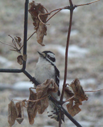

It’s always a joy to spot a downy woodpecker either on the suet or in my old maple tree. It will stay on a suet feeder until it has feasted to its satisfaction, not intimidated by any other bird. If challenged, it will simply move to the other side. The downy is the smallest – six inches long - and most common of all the woodpeckers. The male sports a red chunk on the back of his head. The female lacks this marking. Both are black and white, white-splotched black wings, black backs with white strip down the center. The outer tail feathers are white – these are seen when the bird is bracing himself against a feeder or tree branch. The beak is short and black, and eyes are also black.
Their natural diet includes insects and insect larvae, probing beneath the bark to find the goodies and picking insects off leaves or twigs. It visits feeding stations for suet and sunflower seeds. You will often see downies in the company of chickadees and nuthatches.
Downies are year-round residents of the continental United States and Canada. In winter they may dig out a roosting hole in the same area where they nest.
The female is the one who chooses the nesting site – in the soft decaying wood of a tree branch. The male helps her prepare the cavity for the nest also helps with incubation.. They will call to one another with a sharp “tick.” Stokes Field Guide to Birds describes their other “songs” as a “whinny call and a queek queek given during courtship.” Drumming is usually done on a hollow stub that resonates to announce territory and to attract a mate during breeding season. Downies use a light tap to seek out wood-boring insects.
Four to five white eggs incubate in 12 days and fledge in 28 to 30 days. As other birds may do, downies experience an “amorous” phase in the autumn, but when the weather turns cold, the pair part and pursue their own lives.
The hairy woodpecker is larger than the downy at 9 inches. It’s a challenge to tell them apart. One hint is that the downy’s beak is half the length of its head. The hairy’s beak is as long as its larger head. Also the white outer tail feathers of the hairy are not spotted as are the downy’s. The hairy prefers forests to residential areas. The hairy does more drilling than probing for insects with his larger bill. Mated hairies use drumming to stay in contact. Courtship, nesting and clutches are similar to the downy. Stokes describes the hairy’s courtship call as, “wicki wicki wicki.”
These “cousins” are most welcome at feeding stations to brighten up a cold, dreary winter day. Look for them and see if you can tell them apart.
